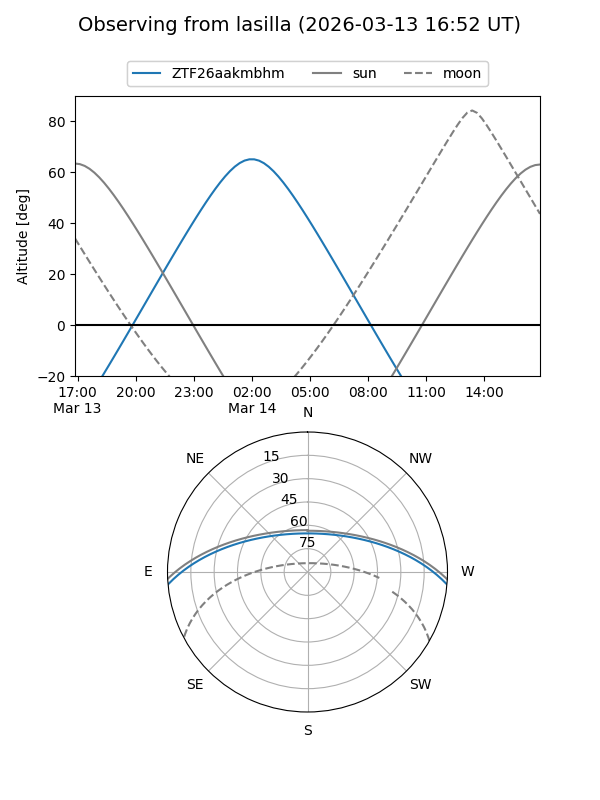
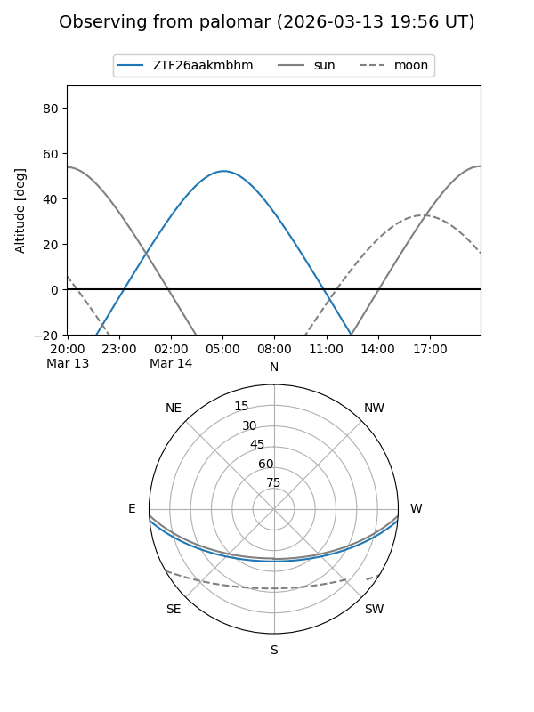

ZTF26aakmbhm
Target ZTF26aakmbhm at 2026-03-14 06:20
Aliases and brokers:
FINK: link
Lasair: link
ALeRCE: link
alt names
ZTF26aakmbhm (ztf,fink_ztf)
Coordinates:
equatorial (ra, dec) = 130.4991,-4.34392
equatorial (HMS+DMS) = 08:41:59.79,-04:20:38.10
galactic (l, b) = (230.4214,+22.15725)
Flags:
Photometry:
last ztfg=19.89
1 ztfg detections
Lightcurve
Visibility


Additional plots